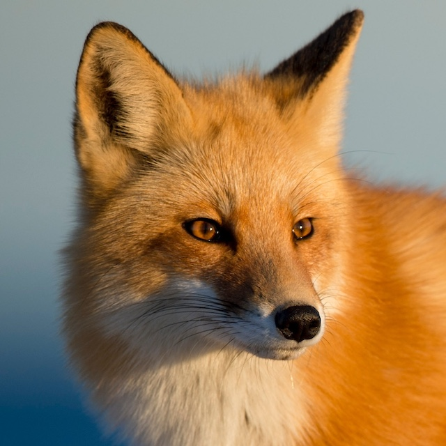

Thinking Outside The Fox
Red Fox
Red foxes are by far the most common and well known foxes out there. Red foxes have primarily red/orange fur but have a gray/white color from their chin to stomach and on the tip of their tail. They also have black fur on their feet and ear tips. Red foxes are typically about 2 feet tall and 3 feet long. This breed is native to and can be found all around North America. Red foxes have amazing hearing and can hear low frequency sounds that help them track rodents.
While these foxes can be good pets under some circumstances they are not fully domesticated at this point so they require much more unique care. These foxes require a lot of room to run and love to dig so they are not the best for an indoor pet. They can be a great outdoor pet but they are still a bit unpredictable due to the fact they are only partially domesticated. Likewise, their urine has a particularly bad odor that has not been shown in other breeds.